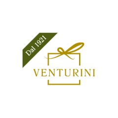
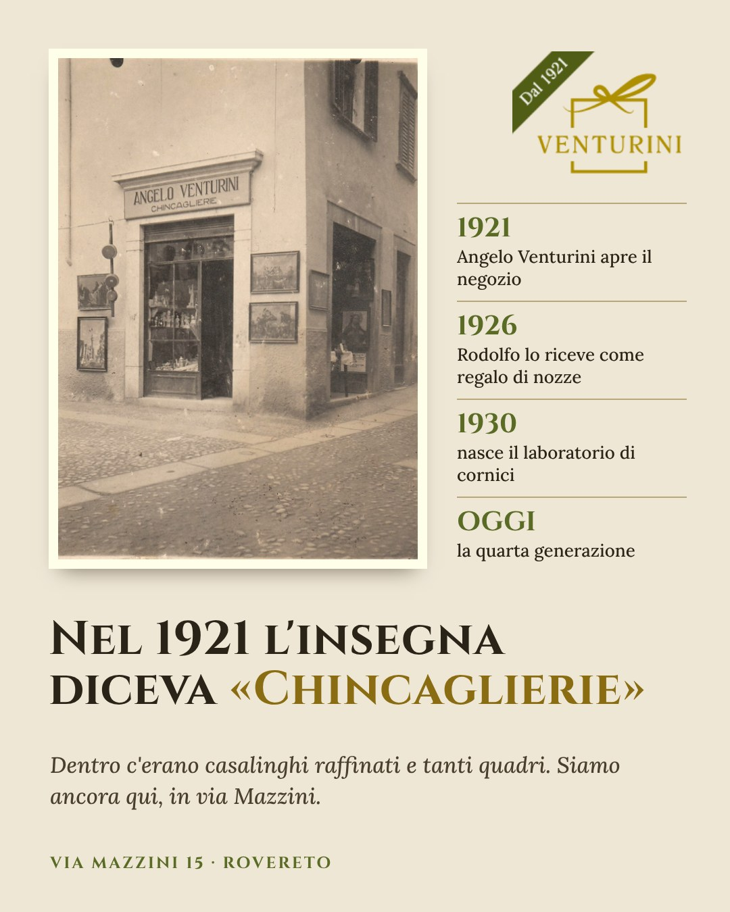
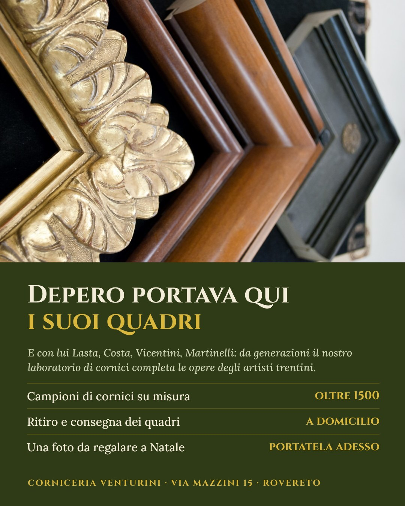

Pronti da pubblicare, con il vostro logo, le vostre foto e le parole del vostro sito. Scaricate l'immagine, copiate la didascalia e sono vostri.

negozioventuriniRovereto

negozioventurini Nel 1921 l'insegna diceva «Chincaglierie». 🕰️
L'ha aperto Angelo Venturini, il nostro bisnonno: dentro c'erano casalinghi raffinati e tanti quadri. Nel 1926 il negozio passò a Rodolfo, come regalo per le nozze con Giuseppina, e nel 1930 nacque il laboratorio di cornici.
Oggi siamo alla quarta generazione, sempre in via Mazzini a Rovereto.
#rovereto #negozistorici #dal1921 #trentino #regali

negozioventurini Depero portava qui i suoi quadri. 🖼️
E con lui Lasta, Costa, Vicentini, Martinelli e tanti altri artisti trentini: da generazioni la nostra corniceria completa le loro opere.
Oggi abbiamo oltre 1500 campioni di cornici su misura, classiche e moderne, e ritiriamo e consegniamo i quadri a domicilio. Se a Natale volete regalare una foto o un disegno incorniciato, portatelo adesso.
📞 0464 421424
#corniceria #rovereto #depero #cornicisumisura #regalidinatale
Se vi piacciono sono vostri, li pubblicate così come sono. E se vi fa comodo, ogni mese ve ne preparo quattro come questi.
Stefano Pontalti, siti e grafiche social · WhatsApp 371 686 3533